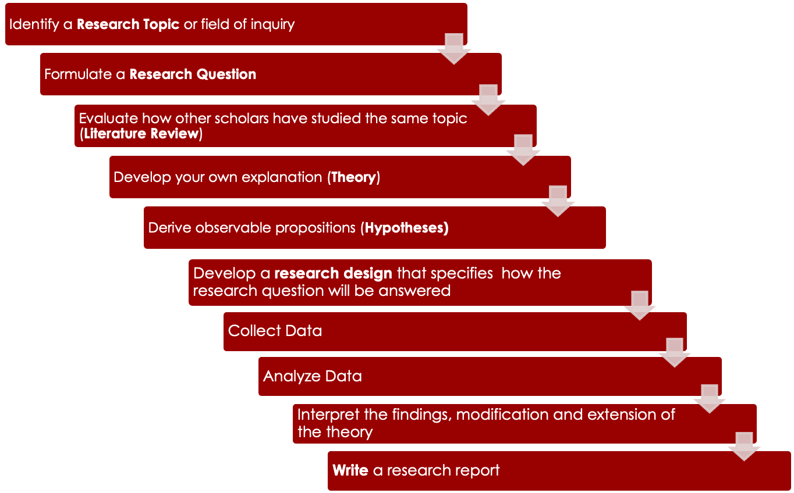
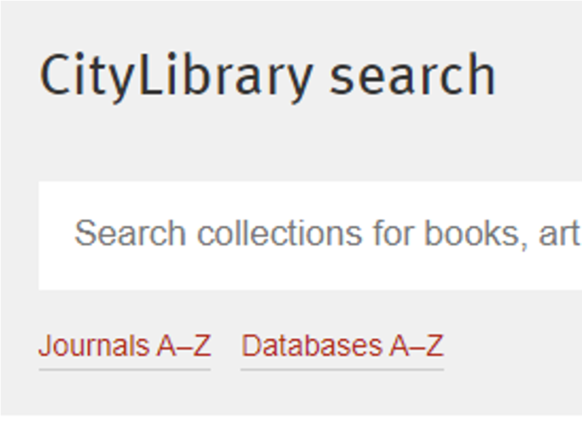
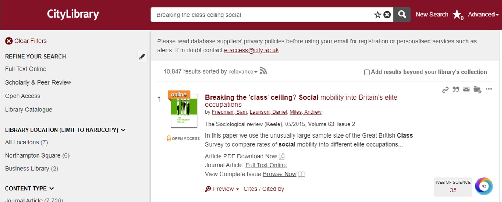
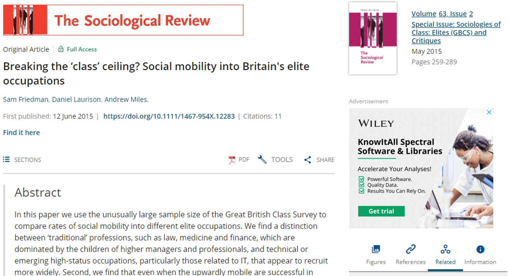
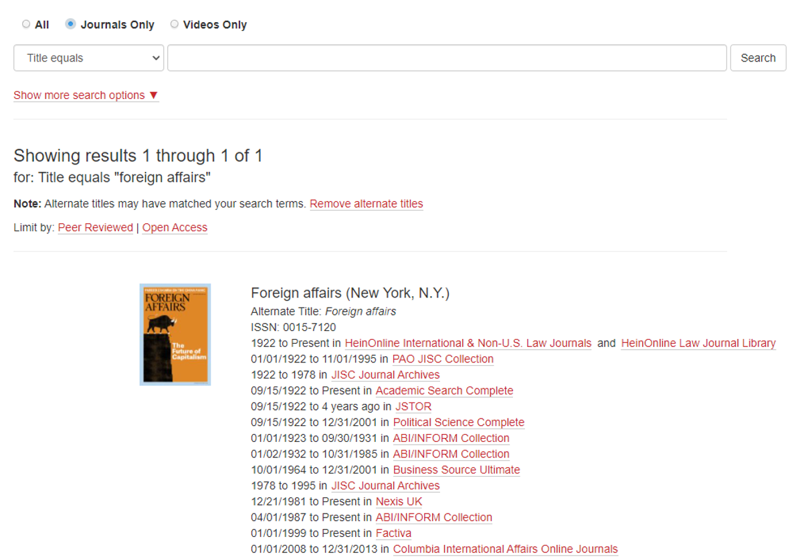
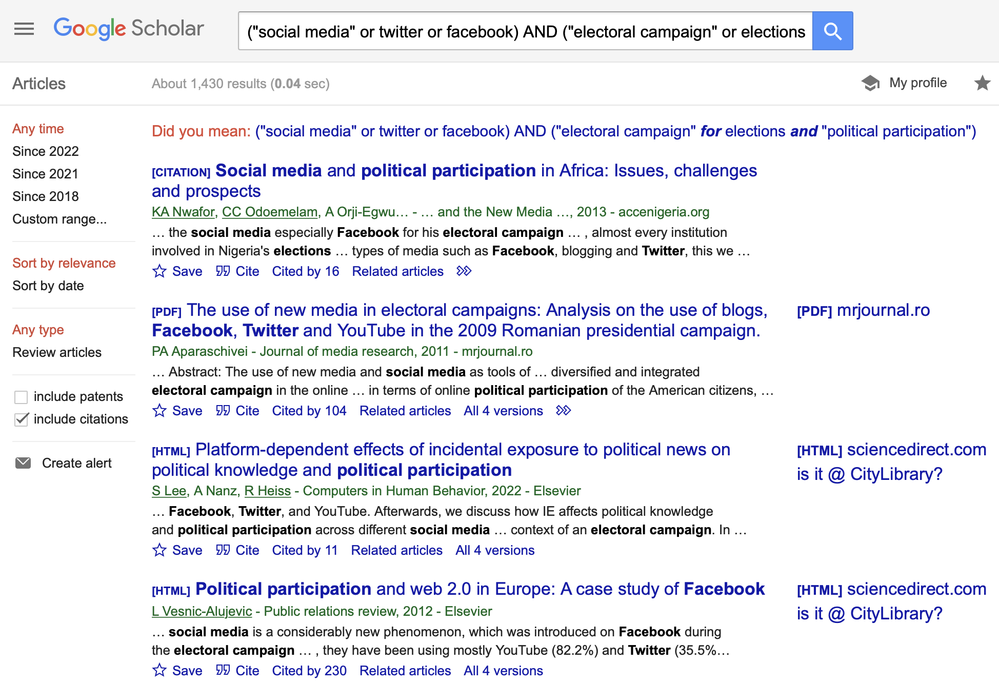
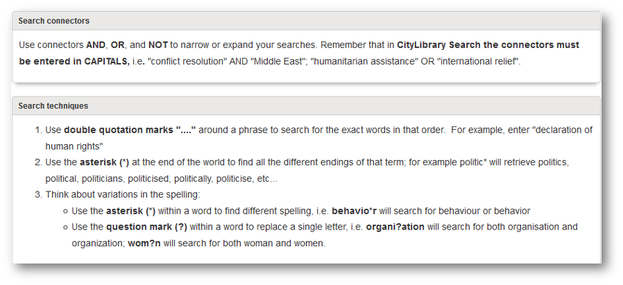
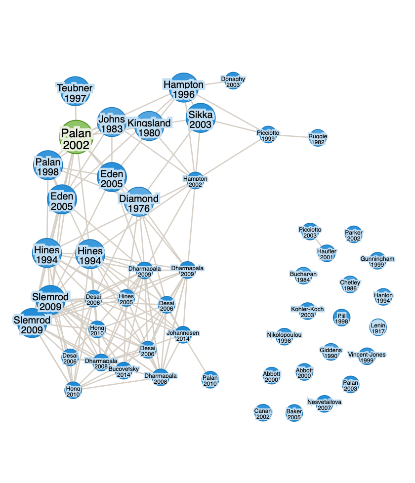
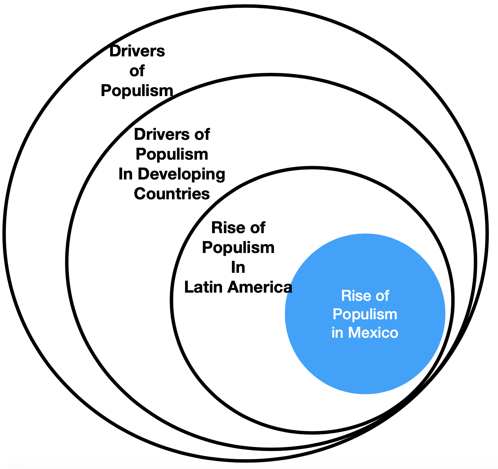

<!DOCTYPE html>
<html lang="en">
  <head>
    <meta charset="utf-8" />
    <meta name="viewport" content="width=device-width, initial-scale=1.0, maximum-scale=1.0, user-scalable=no" />

    <title></title>
    <link rel="stylesheet" href="dist/reveal.css" />
    <link rel="stylesheet" href="css/stefano.css" id="theme" />
    <link rel="stylesheet" href="plugin/highlight/zenburn.css" />
	<link rel="stylesheet" href="css/layout.css" />
	<link rel="stylesheet" href="plugin/customcontrols/style.css">

	<link rel="stylesheet" href="plugin/reveal-pointer/pointer.css" />


    <script defer src="dist/fontawesome/all.min.js"></script>

	<script type="text/javascript">
		var forgetPop = true;
		function onPopState(event) {
			if(forgetPop){
				forgetPop = false;
			} else {
				parent.postMessage(event.target.location.href, "app://obsidian.md");
			}
        }
		window.onpopstate = onPopState;
		window.onmessage = event => {
			if(event.data == "reload"){
				window.document.location.reload();
			}
			forgetPop = true;
		}

		function fitElements(){
			const itemsToFit = document.getElementsByClassName('fitText');
			for (const item in itemsToFit) {
				if (Object.hasOwnProperty.call(itemsToFit, item)) {
					var element = itemsToFit[item];
					fitElement(element,1, 1000);
					element.classList.remove('fitText');
				}
			}
		}

		function fitElement(element, start, end){

			let size = (end + start) / 2;
			element.style.fontSize = `${size}px`;

			if(Math.abs(start - end) < 1){
				while(element.scrollHeight > element.offsetHeight){
					size--;
					element.style.fontSize = `${size}px`;
				}
				return;
			}

			if(element.scrollHeight > element.offsetHeight){
				fitElement(element, start, size);
			} else {
				fitElement(element, size, end);
			}		
		}


		document.onreadystatechange = () => {
			fitElements();
			if (document.readyState === 'complete') {
				if (window.location.href.indexOf("?export") != -1){
					parent.postMessage(event.target.location.href, "app://obsidian.md");
				}
				if (window.location.href.indexOf("print-pdf") != -1){
					let stateCheck = setInterval(() => {
						clearInterval(stateCheck);
						window.print();
					}, 250);
				}
			}
	};


        </script>
  </head>
  <body>
    <div class="reveal">
      <div class="slides"><section ><section data-markdown><script type="text/template"><!-- .slide: class="drop" -->
<div class="" style="position: absolute; left: 0px; top: 0px; height: 700px; width: 960px; min-height: 700px; display: flex; flex-direction: column; align-items: center; justify-content: center" absolute="true">

# How to Review the Literature

Stefano Pagliari

IP3017 - Dissertation
</div></script></section><section data-markdown><script type="text/template"><!-- .slide: class="drop" -->
<div class="" style="position: absolute; left: 0px; top: 0px; height: 700px; width: 960px; min-height: 700px; display: flex; flex-direction: column; align-items: center; justify-content: center" absolute="true">

## What is a Literature Review?

- &shy;<!-- .element: class="fragment" data-fragment-index="1" -->A **process** of reading and thinking about the literature
	- &shy;<!-- .element: class="fragment" data-fragment-index="2" -->Step towards writing your dissertation
- &shy;<!-- .element: class="fragment" data-fragment-index="3" -->A short, **written synthesis** of previous research on a particular topic. 
	- &shy;<!-- .element: class="fragment" data-fragment-index="4" -->Component of your dissertation and dissertation proposal
</div></script></section><section data-markdown><script type="text/template"><!-- .slide: class="drop" -->
<div class="" style="position: absolute; left: 0px; top: 0px; height: 700px; width: 960px; min-height: 700px; display: flex; flex-direction: column; align-items: center; justify-content: center" absolute="true">

## Why a Literature Review?
- &shy;<!-- .element: class="fragment" data-fragment-index="1" -->No topic of study is completely new
- &shy;<!-- .element: class="fragment" data-fragment-index="2" -->One of the most important first steps in the research process is to search how other scholars have studied the topic you have chosen.
</div></script></section><section data-markdown><script type="text/template"><!-- .slide: class="drop" -->
<div class="" style="position: absolute; left: 0px; top: 0px; height: 700px; width: 960px; min-height: 700px; display: flex; flex-direction: column; align-items: center; justify-content: center" absolute="true">

## Literature Review and the Research Process


</div></script></section><section data-markdown><script type="text/template"><!-- .slide: class="drop" -->
<div class="" style="position: absolute; left: 0px; top: 0px; height: 700px; width: 960px; min-height: 700px; display: flex; flex-direction: column; align-items: center; justify-content: center" absolute="true">

## What is a literature review for?

- &shy;<!-- .element: class="fragment" data-fragment-index="1" -->To discover what has already been done well in studying your **topic** and what remains **unresolved** in existing research
- &shy;<!-- .element: class="fragment" data-fragment-index="2" -->To identify **research questions** that others have asked and refine your research question
- &shy;<!-- .element: class="fragment" data-fragment-index="3" -->To learn how others have defined and measured key **concepts**
- &shy;<!-- .element: class="fragment" data-fragment-index="4" -->To identify potential **theories** that explain the phenomenon of interest.
- &shy;<!-- .element: class="fragment" data-fragment-index="5" -->To identify **data** sources that researchers have used   
- &shy;<!-- .element: class="fragment" data-fragment-index="6" -->To understand how your **findings** support or refute observations made by other scholars.
</div></script></section></section><section  data-markdown><script type="text/template"><!-- .slide: class="drop" -->
<div class="" style="position: absolute; left: 0px; top: 0px; height: 700px; width: 960px; min-height: 700px; display: flex; flex-direction: column; align-items: center; justify-content: center" absolute="true">

## How do I conduct a literature review?

1. &shy;<!-- .element: class="fragment" data-fragment-index="1" -->**Collect** Sources
1. &shy;<!-- .element: class="fragment" data-fragment-index="2" -->**Read** Analytically 
1. &shy;<!-- .element: class="fragment" data-fragment-index="3" -->**Summarize** the literature
1. &shy;<!-- .element: class="fragment" data-fragment-index="4" -->**Connect** your research to the literature
</div></script></section><section  data-markdown><script type="text/template"><!-- .slide: class="drop" -->
<div class="" style="position: absolute; left: 0px; top: 0px; height: 700px; width: 960px; min-height: 700px; display: flex; flex-direction: column; align-items: center; justify-content: center" absolute="true">

## Collect Sources
</div></script></section><section ><section data-markdown><script type="text/template"><!-- .slide: class="drop" -->
<div class="" style="position: absolute; left: 0px; top: 0px; height: 700px; width: 960px; min-height: 700px; display: flex; flex-direction: column; align-items: center; justify-content: center" absolute="true">

# Accessing Source
</div></script></section><section data-markdown><script type="text/template"><!-- .slide: class="drop" -->
<div class="" style="position: absolute; left: 0px; top: 0px; height: 700px; width: 960px; min-height: 700px; display: flex; flex-direction: column; align-items: center; justify-content: center" absolute="true">

## What are Academic Sources Databases?
- Organised collection of material in electronic format
- Searchable by subject, author, publication date.
- Will help you find journal / magazine / newspapers articles, books, book chapters, statistics, working papers, dissertations, etc. on a particular topic
</div></script></section><section data-markdown><script type="text/template"><!-- .slide: class="drop" -->
<div class="" style="position: absolute; left: 0px; top: 0px; height: 700px; width: 960px; min-height: 700px; display: flex; flex-direction: column; align-items: center; justify-content: center" absolute="true">

## How to Find Databases

Databases A-Z list [https://libraryservices.city.ac.uk/](https://libraryservices.city.ac.uk/)


</div></script></section><section data-markdown><script type="text/template"><!-- .slide: class="drop" -->
<div class="" style="position: absolute; left: 0px; top: 0px; height: 700px; width: 960px; min-height: 700px; display: flex; flex-direction: column; align-items: center; justify-content: center" absolute="true">

## Specialist databases

- &shy;<!-- .element: class="fragment" data-fragment-index="1" -->**Bibliographic databases**
	- e.g.  **Google Scholar**, **Scopus** and **Web of Science** tell you what has been written on the topic you are researching.  
	- They will retrieve a complete reference (including the abstract of the article if available) to enable you to locate the document.
- &shy;<!-- .element: class="fragment" data-fragment-index="2" -->**Full-text databases**
	- e.g. **JSTOR**, **Business Source Ultimate**, **Academic Search Complete** and **ABI/Inform**
	- Tell you what has been written on the topic, and give you direct access to the full-text.
</div></script></section><section data-markdown><script type="text/template"><!-- .slide: class="drop" -->
<div class="" style="position: absolute; left: 0px; top: 0px; height: 700px; width: 960px; min-height: 700px; display: flex; flex-direction: column; align-items: center; justify-content: center" absolute="true">

## Library Search

https://libraryservices.city.ac.uk/


</div></script></section><section data-markdown><script type="text/template"><!-- .slide: class="drop" -->
<div class="" style="position: absolute; left: 0px; top: 0px; height: 700px; width: 960px; min-height: 700px; display: flex; flex-direction: column; align-items: center; justify-content: center" absolute="true">

## How to Find Journal Articles

<small>Friedman, S., Laurison, D., and Miles, A. (2015) 'Breaking the 'class' ceiling? Social mobility into Britain's elite occupations', The Sociological Review, 63(2), pp. 259-289. doi.org/10.1111/1467-954X.12283 </small>



</div></script></section><section data-markdown><script type="text/template"><!-- .slide: class="drop" -->
<div class="" style="position: absolute; left: 0px; top: 0px; height: 700px; width: 960px; min-height: 700px; display: flex; flex-direction: column; align-items: center; justify-content: center" absolute="true">

## How to Find Journal Articles


</div></script></section><section data-markdown><script type="text/template"><!-- .slide: class="drop" -->
<div class="" style="position: absolute; left: 0px; top: 0px; height: 700px; width: 960px; min-height: 700px; display: flex; flex-direction: column; align-items: center; justify-content: center" absolute="true">

## How to Find Journals

Journals A-Z list [https://libraryservices.city.ac.uk/](https://libraryservices.city.ac.uk/)


</div></script></section><section data-markdown><script type="text/template"><!-- .slide: class="drop" -->
<div class="" style="position: absolute; left: 0px; top: 0px; height: 700px; width: 960px; min-height: 700px; display: flex; flex-direction: column; align-items: center; justify-content: center" absolute="true">

## How to Find Journals


</div></script></section><section data-markdown><script type="text/template"><!-- .slide: class="drop" -->
<div class="" style="position: absolute; left: 0px; top: 0px; height: 700px; width: 960px; min-height: 700px; display: flex; flex-direction: column; align-items: center; justify-content: center" absolute="true">

## Other Databases
</div></script></section><section data-markdown><script type="text/template"><!-- .slide: class="drop" -->
<div class="" style="position: absolute; left: 0px; top: 0px; height: 700px; width: 960px; min-height: 700px; display: flex; flex-direction: column; align-items: center; justify-content: center" absolute="true">

## E.g. Google Scholar



</div></script></section><section data-markdown><script type="text/template"><!-- .slide: class="drop" -->
<div class="" style="position: absolute; left: 0px; top: 0px; height: 700px; width: 960px; min-height: 700px; display: flex; flex-direction: column; align-items: center; justify-content: center" absolute="true">

## E.g. Academic Search Complete


</div></script></section><section data-markdown><script type="text/template"><!-- .slide: class="drop" -->
<div class="" style="position: absolute; left: 0px; top: 0px; height: 700px; width: 960px; min-height: 700px; display: flex; flex-direction: column; align-items: center; justify-content: center" absolute="true">

## Viewing and Refining the Results


</div></script></section><section data-markdown><script type="text/template"><!-- .slide: class="drop" -->
<div class="" style="position: absolute; left: 0px; top: 0px; height: 700px; width: 960px; min-height: 700px; display: flex; flex-direction: column; align-items: center; justify-content: center" absolute="true">

## Is it @City Library?


</div></script></section><section data-markdown><script type="text/template"><!-- .slide: class="drop" -->
<div class="" style="position: absolute; left: 0px; top: 0px; height: 700px; width: 960px; min-height: 700px; display: flex; flex-direction: column; align-items: center; justify-content: center" absolute="true">

## Access to Full Text


</div></script></section><section data-markdown><script type="text/template"><!-- .slide: class="drop" -->
<div class="" style="position: absolute; left: 0px; top: 0px; height: 700px; width: 960px; min-height: 700px; display: flex; flex-direction: column; align-items: center; justify-content: center" absolute="true">

## Access to Full Text


</div></script></section></section><section ><section data-markdown><script type="text/template"><!-- .slide: class="drop" -->
<div class="" style="position: absolute; left: 0px; top: 0px; height: 700px; width: 960px; min-height: 700px; display: flex; flex-direction: column; align-items: center; justify-content: center" absolute="true">

## Strategies for Identifying Sources


1. Keyword-based Search
2. Analysis of Key Authors/Works
</div></script></section><section data-markdown><script type="text/template"><!-- .slide: class="drop" -->
<div class="" style="position: absolute; left: 0px; top: 0px; height: 700px; width: 960px; min-height: 700px; display: flex; flex-direction: column; align-items: center; justify-content: center" absolute="true">

## Step 1 - Break down your topic/question into keywords

- Create a **list of keywords** that describe these concepts
</div></script></section><section data-markdown><script type="text/template"><!-- .slide: class="drop" -->
<div class="" style="position: absolute; left: 0px; top: 0px; height: 700px; width: 960px; min-height: 700px; display: flex; flex-direction: column; align-items: center; justify-content: center" absolute="true">

## Step 1 - Break down your topic/question into keywords
<br>


> Examine the role of social media in electoral campaigns

|- | Concept 1    |  Concept 2               |
|- | ------------ |  ----------------------- |
| Keyword 1 | Social Media |  Electoral campaigns
</div></script></section><section data-markdown><script type="text/template"><!-- .slide: class="drop" -->
<div class="" style="position: absolute; left: 0px; top: 0px; height: 700px; width: 960px; min-height: 700px; display: flex; flex-direction: column; align-items: center; justify-content: center" absolute="true">

## Step 2 - Create a list of keywords that describe these concepts 

- **Synonyms** (e.g. violence or aggression; currency or cash or money)
- **Alternative spelling** (e.g. organisation or organization)
- **Related** terms or **broader** terms (e.g. personnel or human resources; bonds or securities)


|- | Concept 1    |  Concept 2               |
|- | ------------ |  ----------------------- |
| Keyword 1 | Social Media |  Electoral campaign      |
| Keyword 2 | Twitter      |  elections               |
| Keyword 3 | Facebook     |  Political participation |
</div></script></section><section data-markdown><script type="text/template"><!-- .slide: class="drop" -->
<div class="" style="position: absolute; left: 0px; top: 0px; height: 700px; width: 960px; min-height: 700px; display: flex; flex-direction: column; align-items: center; justify-content: center" absolute="true">

## Step 3 - Add Logical Operators


| Keyword 1    |     | Keyword 2               |
| ------------ | --- | ----------------------- |
| Social Media |     | Electoral campaign      |
| OR           |     | OR                      |
| Twitter      |  AND   | elections               |
| OR           |     | OR                      |
| Facebook     |     | Political participation |

> ("social media" or twitter or facebook) AND ("electoral campaign" or elections or "political participation")
</div></script></section></section><section ><section data-markdown><script type="text/template"><!-- .slide: class="drop" -->
<div class="" style="position: absolute; left: 0px; top: 0px; height: 700px; width: 960px; min-height: 700px; display: flex; flex-direction: column; align-items: center; justify-content: center" absolute="true">

## Tips for Database Searching


</div></script></section><section data-markdown><script type="text/template"><!-- .slide: class="drop" -->
<div class="" style="position: absolute; left: 0px; top: 0px; height: 700px; width: 960px; min-height: 700px; display: flex; flex-direction: column; align-items: center; justify-content: center" absolute="true">

## Tips for Database Searching


</div></script></section><section data-markdown><script type="text/template"><!-- .slide: class="drop" -->
<div class="" style="position: absolute; left: 0px; top: 0px; height: 700px; width: 960px; min-height: 700px; display: flex; flex-direction: column; align-items: center; justify-content: center" absolute="true">

## Keyword-Based Search


</div></script></section><section data-markdown><script type="text/template"><!-- .slide: class="drop" -->
<div class="" style="position: absolute; left: 0px; top: 0px; height: 700px; width: 960px; min-height: 700px; display: flex; flex-direction: column; align-items: center; justify-content: center" absolute="true">

## Keyword-Based Search - Search Tips


</div></script></section><section data-markdown><script type="text/template"><!-- .slide: class="drop" -->
<div class="" style="position: absolute; left: 0px; top: 0px; height: 700px; width: 960px; min-height: 700px; display: flex; flex-direction: column; align-items: center; justify-content: center" absolute="true">

## Keyword-Based Search - Search Tips


</div></script></section></section><section ><section data-markdown><script type="text/template"><!-- .slide: class="drop" -->
<div class="" style="position: absolute; left: 0px; top: 0px; height: 700px; width: 960px; min-height: 700px; display: flex; flex-direction: column; align-items: center; justify-content: center" absolute="true">

## Identify the leading scholars and the leading works

- Start from reviewing the most recent articles/books/handbooks that have been produced on your topic 
- Who is cited most frequently?
	- &shy;<!-- .element: class="fragment" data-fragment-index="1" -->Focus on the **leading authors** and consult their personal website
- &shy;<!-- .element: class="fragment" data-fragment-index="2" -->Who has cited a **key work**?
	- &shy;<!-- .element: class="fragment" data-fragment-index="3" -->If you have identified an older study that is particularly relevant for your research interests, search which studies have cited that work
</div></script></section><section data-markdown><script type="text/template"><!-- .slide: class="drop" -->
<div class="" style="position: absolute; left: 0px; top: 0px; height: 700px; width: 960px; min-height: 700px; display: flex; flex-direction: column; align-items: center; justify-content: center" absolute="true">

## Analysis of "cited by"


</div></script></section><section data-markdown><script type="text/template"><!-- .slide: class="drop" -->
<div class="" style="position: absolute; left: 0px; top: 0px; height: 700px; width: 960px; min-height: 700px; display: flex; flex-direction: column; align-items: center; justify-content: center" absolute="true">

## Analysis of "similar papers" via citations pattern (Researchrabbit.com)

Source: https://researchrabbitapp.com/home


</div></script></section></section><section ><section data-markdown><script type="text/template"><!-- .slide: class="drop" -->
<div class="" style="position: absolute; left: 0px; top: 0px; height: 700px; width: 960px; min-height: 700px; display: flex; flex-direction: column; align-items: center; justify-content: center" absolute="true">

## How Many Sources do I need?

- &shy;<!-- .element: class="fragment" data-fragment-index="1" -->Answer is not straightforward. It depends on purpose and scope of the project, as well as available resources on topic.
- &shy;<!-- .element: class="fragment" data-fragment-index="2" -->What if I have What if I have too many sources? sources!
	- More tightly refine your research terms so that they capture only the studies that directly address your question
- &shy;<!-- .element: class="fragment" data-fragment-index="3" -->What if I don’t have enough sources?
	- Think about alternative search terms.
	- Most things we are interested in explaining are instances types of larger phenomena
</div></script></section><section data-markdown><script type="text/template"><!-- .slide: class="drop" -->
<div class="" style="position: absolute; left: 0px; top: 0px; height: 700px; width: 960px; min-height: 700px; display: flex; flex-direction: column; align-items: center; justify-content: center" absolute="true">

## E.g. Dissertation Explaining Rise of Populism in Mexico (Benton 2021)



</div></script></section></section><section ><section data-markdown><script type="text/template"><!-- .slide: class="drop" -->
<div class="" style="position: absolute; left: 0px; top: 0px; height: 700px; width: 960px; min-height: 700px; display: flex; flex-direction: column; align-items: center; justify-content: center" absolute="true">

## Evaluating Sources
</div></script></section><section data-markdown><script type="text/template"><!-- .slide: class="drop" -->
<div class="" style="position: absolute; left: 0px; top: 0px; height: 700px; width: 960px; min-height: 700px; display: flex; flex-direction: column; align-items: center; justify-content: center" absolute="true">

## Type of Sources
- &shy;<!-- .element: class="fragment" data-fragment-index="1" -->**Peer-Reviewed Articles and Book**
	- &shy;<!-- .element: class="fragment" data-fragment-index="2" -->Research reviewed by other researchers before publication
	- &shy;<!-- .element: class="fragment" data-fragment-index="3" -->You should rely as much as possible on scholarly sources
- &shy;<!-- .element: class="fragment" data-fragment-index="4" -->**Academic Reports and Working Papers**
	- &shy;<!-- .element: class="fragment" data-fragment-index="5" -->Written by scholars working for universities, think tanks, research org., or government or private agencies
	- &shy;<!-- .element: class="fragment" data-fragment-index="6" -->Not peer-reviewed
- &shy;<!-- .element: class="fragment" data-fragment-index="7" -->**News Magazines and Newspapers**
	- &shy;<!-- .element: class="fragment" data-fragment-index="8" -->Often contains valuable descriptive information
	- &shy;<!-- .element: class="fragment" data-fragment-index="9" -->Do not involve the construction of generalizable theory.
</div></script></section><section data-markdown><script type="text/template"><!-- .slide: class="drop" -->
<div class="" style="position: absolute; left: 0px; top: 0px; height: 700px; width: 960px; min-height: 700px; display: flex; flex-direction: column; align-items: center; justify-content: center" absolute="true">

## CRAAP Test


<iframe width="560" height="315" src="https://www.youtube.com/embed/_M1-aMCJHFg" title="YouTube video player" frameborder="0" allow="accelerometer; autoplay; clipboard-write; encrypted-media; gyroscope; picture-in-picture" allowfullscreen></iframe>
</div></script></section><section data-markdown><script type="text/template"><!-- .slide: class="drop" -->
<div class="" style="position: absolute; left: 0px; top: 0px; height: 700px; width: 960px; min-height: 700px; display: flex; flex-direction: column; align-items: center; justify-content: center" absolute="true">

### **Currency**: the timeliness of the information

- &shy;<!-- .element: class="fragment" data-fragment-index="1" -->When was the information published or posted?
- &shy;<!-- .element: class="fragment" data-fragment-index="2" -->Has the information been revised or updated?
- &shy;<!-- .element: class="fragment" data-fragment-index="3" -->Is the information current or out-of date for your topic?
- &shy;<!-- .element: class="fragment" data-fragment-index="4" -->Are the links functional?
</div></script></section><section data-markdown><script type="text/template"><!-- .slide: class="drop" -->
<div class="" style="position: absolute; left: 0px; top: 0px; height: 700px; width: 960px; min-height: 700px; display: flex; flex-direction: column; align-items: center; justify-content: center" absolute="true">

### **Relevance**: the importance of the information for your needs

- &shy;<!-- .element: class="fragment" data-fragment-index="1" -->Does the information relate to your topic or answer your question?
- &shy;<!-- .element: class="fragment" data-fragment-index="2" -->Who is the intended audience?
- &shy;<!-- .element: class="fragment" data-fragment-index="3" -->Is the information at an appropriate level (i.e. not too elementary or advanced for your needs)?
- &shy;<!-- .element: class="fragment" data-fragment-index="4" -->Have you looked at a variety of sources before determining this is one you will use?
- &shy;<!-- .element: class="fragment" data-fragment-index="5" -->Would you be comfortable using this source for a research paper?
</div></script></section><section data-markdown><script type="text/template"><!-- .slide: class="drop" -->
<div class="" style="position: absolute; left: 0px; top: 0px; height: 700px; width: 960px; min-height: 700px; display: flex; flex-direction: column; align-items: center; justify-content: center" absolute="true">

### **Authority**: the source of the information

- &shy;<!-- .element: class="fragment" data-fragment-index="1" -->Who is the author/publisher/source/sponsor?
- &shy;<!-- .element: class="fragment" data-fragment-index="2" -->Are the author's credentials or organizational affiliations given?
- &shy;<!-- .element: class="fragment" data-fragment-index="3" -->What are the author's credentials or organizational affiliations given?What are the author's qualifications to write on the topic?
- &shy;<!-- .element: class="fragment" data-fragment-index="4" -->Is there contact information, such as a publisher or e-mail address?
- &shy;<!-- .element: class="fragment" data-fragment-index="5" -->Does the URL reveal anything about the author or source?examples:
	- .com (commercial), .edu (educational), .gov (U.S. government)
	- .org (nonprofit organization), or
        - .net (network)
</div></script></section><section data-markdown><script type="text/template"><!-- .slide: class="drop" -->
<div class="" style="position: absolute; left: 0px; top: 0px; height: 700px; width: 960px; min-height: 700px; display: flex; flex-direction: column; align-items: center; justify-content: center" absolute="true">

### **Accuracy**: the reliability, truthfulness, and correctness of the content

- &shy;<!-- .element: class="fragment" data-fragment-index="1" -->Where does the information come from?
- &shy;<!-- .element: class="fragment" data-fragment-index="2" -->Is the information supported by evidence?
- &shy;<!-- .element: class="fragment" data-fragment-index="3" -->Has the information been reviewed or refereed?
- &shy;<!-- .element: class="fragment" data-fragment-index="4" -->Can you verify any of the information in another source or from personal knowledge?
- &shy;<!-- .element: class="fragment" data-fragment-index="5" -->Does the language or tone seem biased and free of emotion?
- &shy;<!-- .element: class="fragment" data-fragment-index="6" -->Are there spelling, grammar, or other typographical errors?
</div></script></section><section data-markdown><script type="text/template"><!-- .slide: class="drop" -->
<div class="" style="position: absolute; left: 0px; top: 0px; height: 700px; width: 960px; min-height: 700px; display: flex; flex-direction: column; align-items: center; justify-content: center" absolute="true">

### **Purpose**: the reason the information exists

- &shy;<!-- .element: class="fragment" data-fragment-index="1" -->What is the purpose of the information? to inform? teach? sell? entertain? persuade?
- &shy;<!-- .element: class="fragment" data-fragment-index="2" -->Do the authors/sponsors make their intentions or purpose clear?
- &shy;<!-- .element: class="fragment" data-fragment-index="3" -->Is the information fact? opinion? propaganda?
- &shy;<!-- .element: class="fragment" data-fragment-index="4" -->Does the point of view appear objective and impartial?
- &shy;<!-- .element: class="fragment" data-fragment-index="5" -->Are there political, ideological, cultural, religious, institutional, or personal biases?
</div></script></section></section><section ><section data-markdown><script type="text/template"><!-- .slide: class="drop" -->
<div class="" style="position: absolute; left: 0px; top: 0px; height: 700px; width: 960px; min-height: 700px; display: flex; flex-direction: column; align-items: center; justify-content: center" absolute="true">

## Organise Sources via Reference Managers
</div></script></section><section data-markdown><script type="text/template"><!-- .slide: class="drop" -->
<div class="" style="position: absolute; left: 0px; top: 0px; height: 700px; width: 960px; min-height: 700px; display: flex; flex-direction: column; align-items: center; justify-content: center" absolute="true">

## What is a reference manager?

- Software to
	- &shy;<!-- .element: class="fragment" data-fragment-index="1" -->to manage and store your references from projects and dissertations.
	- &shy;<!-- .element: class="fragment" data-fragment-index="2" -->Export references from [CityLibrary Search](https://libraryservices.city.ac.uk/) and many databases and Google Scholar etc 
	- &shy;<!-- .element: class="fragment" data-fragment-index="3" -->Add references to the document you are writing
	- &shy;<!-- .element: class="fragment" data-fragment-index="4" -->Create and format bibliographies in different styles and generate in text citations.
</div></script></section><section data-markdown><script type="text/template"><!-- .slide: class="drop" -->
<div class="" style="position: absolute; left: 0px; top: 0px; height: 700px; width: 960px; min-height: 700px; display: flex; flex-direction: column; align-items: center; justify-content: center" absolute="true">

## Popular Reference Managers

- RefWorks (https://libguides.city.ac.uk/refworks)
	<iframe width="640" height="360" src="https://web.microsoftstream.com/embed/video/f47025b2-1c86-4196-93e8-2841dedbd0c7?autoplay=false&showinfo=true" allowfullscreen style="border:none;"></iframe>

- Free alternatives: [Zotero](https://www.zotero.org); [Mendeley](https://www.mendeley.com)
</div></script></section></section><section  data-markdown><script type="text/template"><!-- .slide: class="drop" -->
<div class="" style="position: absolute; left: 0px; top: 0px; height: 700px; width: 960px; min-height: 700px; display: flex; flex-direction: column; align-items: center; justify-content: center" absolute="true">

## How do I conduct a literature review?

1. &shy;<!-- .element: class="fragment" data-fragment-index="1" -->**Collect** Sources
1. &shy;<!-- .element: class="fragment" data-fragment-index="2" -->**Read** Analytically 
1. &shy;<!-- .element: class="fragment" data-fragment-index="3" -->**Organize and Summarize** the literature
1. &shy;<!-- .element: class="fragment" data-fragment-index="4" -->**Connect** your research to the literature
</div></script></section><section ><section data-markdown><script type="text/template"><!-- .slide: class="drop" -->
<div class="" style="position: absolute; left: 0px; top: 0px; height: 700px; width: 960px; min-height: 700px; display: flex; flex-direction: column; align-items: center; justify-content: center" absolute="true">

## Step 2: Read Analytically
</div></script></section><section data-markdown><script type="text/template"><!-- .slide: class="drop" -->
<div class="" style="position: absolute; left: 0px; top: 0px; height: 700px; width: 960px; min-height: 700px; display: flex; flex-direction: column; align-items: center; justify-content: center" absolute="true">

### Annotated Bibliography

- &shy;<!-- .element: class="fragment" data-fragment-index="1" -->Annotated bibliographies are a tool for you. The text of the notes will not appear directly in the literature review
- &shy;<!-- .element: class="fragment" data-fragment-index="2" -->For each source, identify/write down notes summarizing
	- &shy;<!-- .element: class="fragment" data-fragment-index="3" -->**Question:** What is the author’s central question or subject of inquiry? Why does the author argue this is important?
	- &shy;<!-- .element: class="fragment" data-fragment-index="4" -->**Argument:** What are the author’s key claims? How does it differ from others? What assumptions underlie the argument? 
	- &shy;<!-- .element: class="fragment" data-fragment-index="5" -->**Method:** What methods are used to demonstrate the argument? Are there any shortcomings or flaws? 
	- &shy;<!-- .element: class="fragment" data-fragment-index="6" -->**Evidence:** What evidence is presented in support of the claims that are made? Is the evidence well selected?  
	- &shy;<!-- .element: class="fragment" data-fragment-index="7" -->**Quotes:** Select quotes that you might eventually include in the text of your research paper. Take note of the page number(s)
</div></script></section></section><section ><section data-markdown><script type="text/template"><!-- .slide: class="drop" -->
<div class="" style="position: absolute; left: 0px; top: 0px; height: 700px; width: 960px; min-height: 700px; display: flex; flex-direction: column; align-items: center; justify-content: center" absolute="true">

## Step 3: Summarize the Literature 

- &shy;<!-- .element: class="fragment" data-fragment-index="1" -->From the analysis of each individual study to the synthesis of the collective results that have emerged from past research
</div></script></section><section data-markdown><script type="text/template"><!-- .slide: class="drop" -->
<div class="" style="position: absolute; left: 0px; top: 0px; height: 700px; width: 960px; min-height: 700px; display: flex; flex-direction: column; align-items: center; justify-content: center" absolute="true">

## Organizing the Literature: Main explanations 
- &shy;<!-- .element: class="fragment" data-fragment-index="1" -->Group studies according to main explanation
	- &shy;<!-- .element: class="fragment" data-fragment-index="2" -->**General Factors:** These are larger concepts, within which narrower types of explanations can fall
	- &shy;<!-- .element: class="fragment" data-fragment-index="3" -->**Specific explanations:** These are the narrower types of IVs that fall into larger conceptual groups
	- &shy;<!-- .element: class="fragment" data-fragment-index="4" -->**Causal Mechanisms**: For each  group work by similarity of causal mechanisms or predicted outcomes
- &shy;<!-- .element: class="fragment" data-fragment-index="5" -->Goal: to identify the main causal mechanisms, any alternative arguments, and any contradictory arguments/predictions
</div></script></section><section data-markdown><script type="text/template"><!-- .slide: class="drop" -->
<div class="" style="position: absolute; left: 0px; top: 0px; height: 700px; width: 960px; min-height: 700px; display: flex; flex-direction: column; align-items: center; justify-content: center" absolute="true">

### Example: Explaining the Level of Political Corruption (Benton 2021) 


</div></script></section><section data-markdown><script type="text/template"><!-- .slide: class="drop" -->
<div class="" style="position: absolute; left: 0px; top: 0px; height: 700px; width: 960px; min-height: 700px; display: flex; flex-direction: column; align-items: center; justify-content: center" absolute="true">

### Example: Explaining the Level of Political Corruption (Benton 2021) 


</div></script></section><section data-markdown><script type="text/template"><!-- .slide: class="drop" -->
<div class="" style="position: absolute; left: 0px; top: 0px; height: 700px; width: 960px; min-height: 700px; display: flex; flex-direction: column; align-items: center; justify-content: center" absolute="true">

## Organizing the Literature: Empirical Evidence

- &shy;<!-- .element: class="fragment" data-fragment-index="1" -->Note the type of evidence (cases, data) used  
- &shy;<!-- .element: class="fragment" data-fragment-index="2" -->Goal: to discover whether
	- &shy;<!-- .element: class="fragment" data-fragment-index="3" -->studies proposing the same explanation but using different cases/data find the same thing
	- &shy;<!-- .element: class="fragment" data-fragment-index="4" -->studies proposing the same explanation but fail to test the argument on appropriate cases and/or data
	- &shy;<!-- .element: class="fragment" data-fragment-index="5" -->the same explanation could apply to other types of cases
</div></script></section><section data-markdown><script type="text/template"><!-- .slide: class="drop" -->
<div class="" style="position: absolute; left: 0px; top: 0px; height: 700px; width: 960px; min-height: 700px; display: flex; flex-direction: column; align-items: center; justify-content: center" absolute="true">

## Organizing the Literature: Method of Analysis

- &shy;<!-- .element: class="fragment" data-fragment-index="1" -->Group by similarity of method 
- &shy;<!-- .element: class="fragment" data-fragment-index="2" -->Goal: to discover whether
	- &shy;<!-- .element: class="fragment" data-fragment-index="3" -->studies using the same explanation but using different methods find the same thing or not
	- &shy;<!-- .element: class="fragment" data-fragment-index="4" -->studies proposing the same explanation but fail to use the appropriate method of analysis
	- &shy;<!-- .element: class="fragment" data-fragment-index="5" -->the same method could apply to other types of cases or data
</div></script></section><section data-markdown><script type="text/template"><!-- .slide: class="drop" -->
<div class="" style="position: absolute; left: 0px; top: 0px; height: 700px; width: 960px; min-height: 700px; display: flex; flex-direction: column; align-items: center; justify-content: center" absolute="true">


</div></script></section></section><section ><section data-markdown><script type="text/template"><!-- .slide: class="drop" -->
<div class="" style="position: absolute; left: 0px; top: 0px; height: 700px; width: 960px; min-height: 700px; display: flex; flex-direction: column; align-items: center; justify-content: center" absolute="true">

## Step 4: Connect your Analysis to the Literature

- &shy;<!-- .element: class="fragment" data-fragment-index="1" -->Conclusion of the literature review should indicate how your research will relate to what other scholars have done so far
</div></script></section><section data-markdown><script type="text/template"><!-- .slide: class="drop" -->
<div class="" style="position: absolute; left: 0px; top: 0px; height: 700px; width: 960px; min-height: 700px; display: flex; flex-direction: column; align-items: center; justify-content: center" absolute="true">

### Theoretical vs. Empirical Contribution (Benton 2021)

</div></script></section><section data-markdown><script type="text/template"><!-- .slide: class="drop" -->
<div class="" style="position: absolute; left: 0px; top: 0px; height: 700px; width: 960px; min-height: 700px; display: flex; flex-direction: column; align-items: center; justify-content: center" absolute="true">

## Linking your Analysis to the Theory/Explanations from the Existing Literature

- &shy;<!-- .element: class="fragment" data-fragment-index="1" -->You may see an explanation that works for your study 
- &shy;<!-- .element: class="fragment" data-fragment-index="2" -->You may see explanations that are alternative to one another  
- &shy;<!-- .element: class="fragment" data-fragment-index="3" -->You may see explanations that contradict one another 
- &shy;<!-- .element: class="fragment" data-fragment-index="4" -->You may see explanations that aren’t very clear
- &shy;<!-- .element: class="fragment" data-fragment-index="5" -->You may see that none of the current explanations work and that you have a different explanation
</div></script></section><section data-markdown><script type="text/template"><!-- .slide: class="drop" -->
<div class="" style="position: absolute; left: 0px; top: 0px; height: 700px; width: 960px; min-height: 700px; display: flex; flex-direction: column; align-items: center; justify-content: center" absolute="true">

### E.g. Exploring Missing Theoretical Explanation in the Literature (Benton 2021)

</div></script></section><section data-markdown><script type="text/template"><!-- .slide: class="drop" -->
<div class="" style="position: absolute; left: 0px; top: 0px; height: 700px; width: 960px; min-height: 700px; display: flex; flex-direction: column; align-items: center; justify-content: center" absolute="true">

### E.g. Exploring Missing Theoretical Explanation in the Literature (Benton 2021)


</div></script></section><section data-markdown><script type="text/template"><!-- .slide: class="drop" -->
<div class="" style="position: absolute; left: 0px; top: 0px; height: 700px; width: 960px; min-height: 700px; display: flex; flex-direction: column; align-items: center; justify-content: center" absolute="true">

## Linking your Analysis to the Empirics/Data from the Existing Literature

- &shy;<!-- .element: class="fragment" data-fragment-index="1" -->You may that someone has already studied your case but not from the theoretical perspective you wish 
- &shy;<!-- .element: class="fragment" data-fragment-index="2" -->You may see that someone has studied your case but left something unexplained
- &shy;<!-- .element: class="fragment" data-fragment-index="3" -->You may see that your case defies current explanations
- &shy;<!-- .element: class="fragment" data-fragment-index="4" -->You may see that people have come to different conclusions about your case 
- &shy;<!-- .element: class="fragment" data-fragment-index="5" -->You may see that nobody has studied your case
</div></script></section></section><section ><section data-markdown><script type="text/template"><!-- .slide: class="drop" -->
<div class="" style="position: absolute; left: 0px; top: 0px; height: 700px; width: 960px; min-height: 700px; display: flex; flex-direction: column; align-items: center; justify-content: center" absolute="true">

### E.g. Exploring Empirical Puzzle (Benton 2021)


</div></script></section><section data-markdown><script type="text/template"><!-- .slide: class="drop" -->
<div class="" style="position: absolute; left: 0px; top: 0px; height: 700px; width: 960px; min-height: 700px; display: flex; flex-direction: column; align-items: center; justify-content: center" absolute="true">

### E.g. Exploring Empirical Oddity (Benton 2021)


</div></script></section><section data-markdown><script type="text/template"><!-- .slide: class="drop" -->
<div class="" style="position: absolute; left: 0px; top: 0px; height: 700px; width: 960px; min-height: 700px; display: flex; flex-direction: column; align-items: center; justify-content: center" absolute="true">

### E.g. Exploring New Data/Cases (Benton 2021)


</div></script></section><section data-markdown><script type="text/template"><!-- .slide: class="drop" -->
<div class="" style="position: absolute; left: 0px; top: 0px; height: 700px; width: 960px; min-height: 700px; display: flex; flex-direction: column; align-items: center; justify-content: center" absolute="true">

## How to Summarise the Literature: Be Selective 
- &shy;<!-- .element: class="fragment" data-fragment-index="1" -->Principal aim is not to summarise everything that has been written on a topic, but only the part that addresses the question you are asking
- &shy;<!-- .element: class="fragment" data-fragment-index="2" -->“*the content of the final literature review should be decided on a need-to- know, not a look- at- what-I’ve-read basis*” (Dunleavy)
</div></script></section><section data-markdown><script type="text/template"><!-- .slide: class="drop" -->
<div class="" style="position: absolute; left: 0px; top: 0px; height: 700px; width: 960px; min-height: 700px; display: flex; flex-direction: column; align-items: center; justify-content: center" absolute="true">

## Organize literature around the objective of your work

- &shy;<!-- .element: class="fragment" data-fragment-index="1" -->**Theoretical** — Organize Around Theories
	- &shy;<!-- .element: class="fragment" data-fragment-index="2" -->**Variable** (A new variable in a major area that has been overlooked)
	- &shy;<!-- .element: class="fragment" data-fragment-index="3" -->**Conceptual** (A major area that has been overlooked)
	- &shy;<!-- .element: class="fragment" data-fragment-index="4" -->**Mechanical** (Alternative Arguments, Contradictory Arguments)
- &shy;<!-- .element: class="fragment" data-fragment-index="5" -->**Empirical** — Organize Around Evidence
	- &shy;<!-- .element: class="fragment" data-fragment-index="6" -->**Data** (What type of data have been used)
	- &shy;<!-- .element: class="fragment" data-fragment-index="7" -->**Cases** (Which cases have been chosen)
	- &shy;<!-- .element: class="fragment" data-fragment-index="8" -->**Method** (What methods have been used to examine that data)
</div></script></section><section data-markdown><script type="text/template"><!-- .slide: class="drop" -->
<div class="" style="position: absolute; left: 0px; top: 0px; height: 700px; width: 960px; min-height: 700px; display: flex; flex-direction: column; align-items: center; justify-content: center" absolute="true">

## How to Summarise the Literature: Avoid the "list"
- &shy;<!-- .element: class="fragment" data-fragment-index="1" -->Avoid discussing each collected reference in turn. This is a mistake. You should discuss the literature as a whole
- &shy;<!-- .element: class="fragment" data-fragment-index="2" -->Think of a literature review as an essay about what has been written on your topic.
</div></script></section><section data-markdown><script type="text/template"><!-- .slide: class="drop" -->
<div class="" style="position: absolute; left: 0px; top: 0px; height: 700px; width: 960px; min-height: 700px; display: flex; flex-direction: column; align-items: center; justify-content: center" absolute="true">

## Models to Summarise the Literature
- &shy;<!-- .element: class="fragment" data-fragment-index="1" -->“**Conventional Wisdom**” Model
	- &shy;<!-- .element: class="fragment" data-fragment-index="2" -->What the existing studies have in common? What is the “conventional wisdom” about a subject?
- &shy;<!-- .element: class="fragment" data-fragment-index="3" -->**"Ongoing debates"** Model
	- &shy;<!-- .element: class="fragment" data-fragment-index="4" -->What the studies disagree about? What are the main “camps” or “schools of thought”?
</div></script></section></section><section  data-markdown><script type="text/template"><!-- .slide: class="drop" -->
<div class="" style="position: absolute; left: 0px; top: 0px; height: 700px; width: 960px; min-height: 700px; display: flex; flex-direction: column; align-items: center; justify-content: center" absolute="true">

## Length of the Literature Review

- BA Thesis: about 3-4 pages (double-spaced, 12 point font)
</div></script></section><section ><section data-markdown><script type="text/template"><!-- .slide: class="drop" -->
<div class="" style="position: absolute; left: 0px; top: 0px; height: 700px; width: 960px; min-height: 700px; display: flex; flex-direction: column; align-items: center; justify-content: center" absolute="true">

# Class Activity
</div></script></section><section data-markdown><script type="text/template"><!-- .slide: class="drop" -->
<div class="" style="position: absolute; left: 0px; top: 0px; height: 700px; width: 960px; min-height: 700px; display: flex; flex-direction: column; align-items: center; justify-content: center" absolute="true">

## Activity: Identify sources for your Project

- Use Web of Science or Google Scholar to search for articles related to the assigned research question
- Using an acceptable format, list your first three sources
</div></script></section><section data-markdown><script type="text/template"><!-- .slide: class="drop" -->
<div class="" style="position: absolute; left: 0px; top: 0px; height: 700px; width: 960px; min-height: 700px; display: flex; flex-direction: column; align-items: center; justify-content: center" absolute="true">

## Activity: Relevant or Not?

-  Suppose you are doing research on the current state of income inequality in the United States.
- Which of the following potential sources would be relevant? Why? For each source below, indicate if it should be high or low priority (source Mycoff 2015)
	- Thomas Piketty’s 2014 book Capital in the Twenty-First Century
	- A 2013 National Public Radio interview with economist Tyler Cowan,author of Average Is Over. 
	- Thomas Edsall’s review in the New York Times of Joseph Stiglitz’s 2012 book, The Price of Inequality.  
	- A report titled “The Truth about Income Inequality,” produced by the Center of the American Experiment
	- A 2015 article titled “The Fiscal Disadvantage of Young Italians: A New View on Consolidation and Fairness,” published in the Journal of Economic Inequality.
	- Jill Lepore’s article, “Richer and Poorer, Accounting for Inequality,” in New Yorker magazine.
	- A news article by Jim Siegel in the Columbus Dispatch about income inequality in Ohio titled “Income Gap Less in Ohio but Growing Everywhere.”
	- A 2014 editorial in the Washington Times titled “Obama’s ‘Income Inequality’ Deeper from Bailing out His Rich Wall Street Donors.”
</div></script></section><section data-markdown><script type="text/template"><!-- .slide: class="drop" -->
<div class="" style="position: absolute; left: 0px; top: 0px; height: 700px; width: 960px; min-height: 700px; display: flex; flex-direction: column; align-items: center; justify-content: center" absolute="true">

## Activity: Review of Existing Literature Review

- Use a research database to find articles from one of the mainstream journals in political science.
- Scroll through several articles and study how the authors constructed their literature reviews
	- was there agreement in the literature?
	- have several authors studied similar topics and reached different conclusions?
</div></script></section></section></div>
    </div>

    <script src="dist/reveal.js"></script>

    <script src="plugin/markdown/markdown.js"></script>
    <script src="plugin/highlight/highlight.js"></script>
    <script src="plugin/zoom/zoom.js"></script>
    <script src="plugin/notes/notes.js"></script>
    <script src="plugin/math/math.js"></script>
	<script src="plugin/mermaid/mermaid.js"></script>
	<script src="plugin/chart/chart.min.js"></script>
	<script src="plugin/chart/plugin.js"></script>
	<script src="plugin/menu/menu.js"></script>
	<script src="plugin/customcontrols/plugin.js"></script>
	<script src="plugin/reveal-pointer/pointer.js"></script>

    <script>
      function extend() {
        var target = {};
        for (var i = 0; i < arguments.length; i++) {
          var source = arguments[i];
          for (var key in source) {
            if (source.hasOwnProperty(key)) {
              target[key] = source[key];
            }
          }
        }
        return target;
      }

	  function isLight(color) {
		let hex = color.replace('#', '');

		// convert #fff => #ffffff
		if(hex.length == 3){
			hex = `${hex[0]}${hex[0]}${hex[1]}${hex[1]}${hex[2]}${hex[2]}`;
		}

		const c_r = parseInt(hex.substr(0, 2), 16);
		const c_g = parseInt(hex.substr(2, 2), 16);
		const c_b = parseInt(hex.substr(4, 2), 16);
		const brightness = ((c_r * 299) + (c_g * 587) + (c_b * 114)) / 1000;
		return brightness > 155;
	}

	var bgColor = getComputedStyle(document.documentElement).getPropertyValue('--r-background-color').trim();
	var isLight = isLight(bgColor);

	if(isLight){
		document.body.classList.add('has-light-background');
	} else {
		document.body.classList.add('has-dark-background');
	}

      // default options to init reveal.js
      var defaultOptions = {
        controls: true,
        progress: true,
        history: true,
        center: true,
        transition: 'default', // none/fade/slide/convex/concave/zoom
        plugins: [
          RevealMarkdown,
          RevealHighlight,
          RevealZoom,
          RevealNotes,
          RevealMath.MathJax3,
		  RevealMermaid,
		  RevealChart,
		  RevealCustomControls,
		  RevealMenu,
	      RevealPointer
        ],


    	allottedTime: 120 * 1000,

		mathjax3: {
			mathjax: 'plugin/math/mathjax/tex-mml-chtml.js',
		},
		markdown: {
		  gfm: true,
		  mangle: true,
		  pedantic: false,
		  smartLists: false,
		  smartypants: false,
		},

		mermaid: {
			theme: isLight ? 'default' : 'dark',
		},

		customcontrols: {
			controls: [
				{id: 'toggle-overview',
				title: 'Toggle overview (O)',
				icon: '<i class="fa fa-th"></i>',
				action: 'Reveal.toggleOverview();'
				},
			]
		},
		menu: {
			loadIcons: false
		}
      };

      // options from URL query string
      var queryOptions = Reveal().getQueryHash() || {};

      var options = extend(defaultOptions, {"width":960,"height":700,"margin":0.1,"controls":true,"progress":true,"slideNumber":true,"transition":"fade","transitionSpeed":"slow"}, queryOptions);
    </script>

    <script>
      Reveal.initialize(options);
    </script>
  </body>

  <!-- created with Advanced Slides -->
</html>
